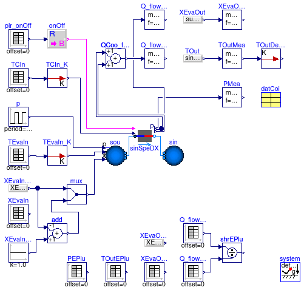

Package with example of DX cooling coil models
Information
This package contains examples that use DX cooling coil models.
Extends from Modelica.Icons.ExamplesPackage (Icon for packages containing runnable examples).
Package Content
Test model for multi stage DX coil

Information
This is a test model for
Buildings.Fluid.HeatExchangers.DXCoils.MultiStage.
The model has open-loop control and time-varying input conditions.
Extends from Modelica.Icons.Example (Icon for runnable examples).
Parameters
| Type | Name | Default | Description |
|---|
| MassFlowRate | m_flow_nominal | datCoi.sta[datCoi.nSta].nomV... | Nominal mass flow rate [kg/s] |
| Pressure | dp_nominal | 1000 | Pressure drop at m_flow_nominal [Pa] |
Modelica definition
model MultiStage
"Test model for multi stage DX coil"
package Medium =
Buildings.Media.GasesConstantDensity.MoistAirUnsaturated;
extends Modelica.Icons.Example;
parameter Modelica.SIunits.MassFlowRate m_flow_nominal = datCoi.sta[datCoi.nSta].nomVal.m_flow_nominal
"Nominal mass flow rate";
parameter Modelica.SIunits.Pressure dp_nominal = 1000
"Pressure drop at m_flow_nominal";
Buildings.Fluid.Sources.Boundary_pT sin(
redeclare package Medium = Medium,
nPorts=1,
p(displayUnit="Pa") = 101325,
T=293.15)
"Sink";
Buildings.Fluid.Sources.Boundary_pT sou(
redeclare package Medium = Medium,
nPorts=1,
p(displayUnit="Pa") = 101325 + dp_nominal,
use_T_in=true,
use_p_in=true,
T=299.85)
"Source";
inner Modelica.Fluid.System system;
Buildings.Fluid.HeatExchangers.DXCoils.MultiStage mulStaDX(
redeclare package Medium = Medium,
dp_nominal=dp_nominal,
datCoi=datCoi,
T_start=datCoi.sta[1].nomVal.TEvaIn_nominal,
show_T=true,
from_dp=true)
"Multispeed DX coil";
Modelica.Blocks.Sources.Ramp TEvaIn(
duration=600,
startTime=2400,
height=-5,
offset=273.15 + 23)
"Temperature";
Modelica.Blocks.Sources.Ramp p(
duration=600,
startTime=600,
height=dp_nominal,
offset=101325)
"Pressure";
Data.Generic.DXCoil
datCoi(nSta=4, sta={
Buildings.Fluid.HeatExchangers.DXCoils.Data.Generic.BaseClasses.Stage(
spe=900/60,
nomVal=
Buildings.Fluid.HeatExchangers.DXCoils.Data.Generic.BaseClasses.NominalValues(
Q_flow_nominal=-12000,
COP_nominal=3,
SHR_nominal=0.8,
m_flow_nominal=0.9),
perCur=
Buildings.Fluid.HeatExchangers.DXCoils.Examples.PerformanceCurves.Curve_I()),
Buildings.Fluid.HeatExchangers.DXCoils.Data.Generic.BaseClasses.Stage(
spe=1200/60,
nomVal=
Buildings.Fluid.HeatExchangers.DXCoils.Data.Generic.BaseClasses.NominalValues(
Q_flow_nominal=-18000,
COP_nominal=3,
SHR_nominal=0.8,
m_flow_nominal=1.2),
perCur=
Buildings.Fluid.HeatExchangers.DXCoils.Examples.PerformanceCurves.Curve_I()),
Buildings.Fluid.HeatExchangers.DXCoils.Data.Generic.BaseClasses.Stage(
spe=1800/60,
nomVal=
Buildings.Fluid.HeatExchangers.DXCoils.Data.Generic.BaseClasses.NominalValues(
Q_flow_nominal=-21000,
COP_nominal=3,
SHR_nominal=0.8,
m_flow_nominal=1.5),
perCur=
Buildings.Fluid.HeatExchangers.DXCoils.Examples.PerformanceCurves.Curve_II()),
Buildings.Fluid.HeatExchangers.DXCoils.Data.Generic.BaseClasses.Stage(
spe=2400/60,
nomVal=
Buildings.Fluid.HeatExchangers.DXCoils.Data.Generic.BaseClasses.NominalValues(
Q_flow_nominal=-30000,
COP_nominal=3,
SHR_nominal=0.8,
m_flow_nominal=1.8),
perCur=
Buildings.Fluid.HeatExchangers.DXCoils.Examples.PerformanceCurves.Curve_III())})
"Coil data";
Modelica.Blocks.Sources.IntegerTable speRat(table=[
0.0,0.0;
900,1;
1800,4;
2700,3;
3600,2])
"Speed ratio ";
Modelica.Blocks.Sources.Constant TConIn(k=273.15 + 25)
"Condensor inlet temperature";
equation
connect(sou.ports[1], mulStaDX.port_a);
connect(mulStaDX.port_b, sin.ports[1]);
connect(TEvaIn.y, sou.T_in);
connect(p.y, sou.p_in);
connect(speRat.y, mulStaDX.stage);
connect(TConIn.y, mulStaDX.TConIn);
end MultiStage;
Test model for single speed DX coil

Information
This is a test model for
Buildings.Fluid.HeatExchangers.DXCoils.SingleSpeed.
The model has open-loop control and time-varying input conditions.
Extends from Modelica.Icons.Example (Icon for runnable examples).
Parameters
| Type | Name | Default | Description |
|---|
| MassFlowRate | m_flow_nominal | datCoi.sta[datCoi.nSta].nomV... | Nominal mass flow rate [kg/s] |
| Pressure | dp_nominal | 1000 | Pressure drop at m_flow_nominal [Pa] |
Modelica definition
model SingleSpeed
"Test model for single speed DX coil"
package Medium =
Buildings.Media.GasesConstantDensity.MoistAirUnsaturated;
extends Modelica.Icons.Example;
parameter Modelica.SIunits.MassFlowRate m_flow_nominal = datCoi.sta[datCoi.nSta].nomVal.m_flow_nominal
"Nominal mass flow rate";
parameter Modelica.SIunits.Pressure dp_nominal = 1000
"Pressure drop at m_flow_nominal";
Buildings.Fluid.Sources.Boundary_pT sin(
redeclare package Medium = Medium,
p(displayUnit="Pa") = 101325,
nPorts=1,
T=303.15)
"Sink";
Buildings.Fluid.Sources.Boundary_pT sou(
redeclare package Medium = Medium,
p(displayUnit="Pa") = 101325 + dp_nominal,
use_T_in=true,
nPorts=1,
use_p_in=true,
T=299.85)
"Source";
inner Modelica.Fluid.System system;
Modelica.Blocks.Sources.BooleanStep onOff(startTime=600)
"Compressor on-off signal";
Modelica.Blocks.Sources.Ramp TEvaIn(
duration=600,
startTime=2400,
height=-5,
offset=273.15 + 23)
"Temperature";
Buildings.Fluid.HeatExchangers.DXCoils.SingleSpeed sinSpeDX(
redeclare package Medium = Medium,
dp_nominal=dp_nominal,
datCoi=datCoi,
T_start=datCoi.sta[1].nomVal.TEvaIn_nominal,
show_T=true,
from_dp=true)
"Single speed DX coil";
Modelica.Blocks.Sources.Ramp p(
duration=600,
startTime=600,
height=dp_nominal,
offset=101325)
"Pressure";
Data.Generic.DXCoil
datCoi(
sta={
Buildings.Fluid.HeatExchangers.DXCoils.Data.Generic.BaseClasses.Stage(
spe=1800/60,
nomVal=
Buildings.Fluid.HeatExchangers.DXCoils.Data.Generic.BaseClasses.NominalValues(
Q_flow_nominal=-21000,
COP_nominal=3,
SHR_nominal=0.8,
m_flow_nominal=1.5),
perCur=
Buildings.Fluid.HeatExchangers.DXCoils.Examples.PerformanceCurves.Curve_II())}, nSta=
1)
"Coil data";
Modelica.Blocks.Sources.Constant TConIn(k=273.15 + 25)
"Condensor inlet temperature";
equation
connect(TEvaIn.y, sou.T_in);
connect(onOff.y, sinSpeDX.on);
connect(sou.ports[1], sinSpeDX.port_a);
connect(sinSpeDX.port_b, sin.ports[1]);
connect(p.y, sou.p_in);
connect(TConIn.y, sinSpeDX.TConIn);
end SingleSpeed;
Test model for variable speed DX coil
Information
This is a test model for
Buildings.Fluid.HeatExchangers.DXCoils.VariableSpeed.
The model has open-loop control and time-varying input conditions.
Extends from Modelica.Icons.Example (Icon for runnable examples).
Parameters
| Type | Name | Default | Description |
|---|
| MassFlowRate | m_flow_nominal | datCoi.sta[datCoi.nSta].nomV... | Nominal mass flow rate [kg/s] |
| Pressure | dp_nominal | 1000 | Pressure drop at m_flow_nominal [Pa] |
Modelica definition
model VariableSpeed
"Test model for variable speed DX coil"
package Medium =
Buildings.Media.GasesConstantDensity.MoistAirUnsaturated;
extends Modelica.Icons.Example;
parameter Modelica.SIunits.MassFlowRate m_flow_nominal = datCoi.sta[datCoi.nSta].nomVal.m_flow_nominal
"Nominal mass flow rate";
parameter Modelica.SIunits.Pressure dp_nominal = 1000
"Pressure drop at m_flow_nominal";
Buildings.Fluid.Sources.Boundary_pT sin(
redeclare package Medium = Medium,
nPorts=1,
p(displayUnit="Pa") = 101325,
T=293.15)
"Sink";
Buildings.Fluid.Sources.Boundary_pT sou(
redeclare package Medium = Medium,
nPorts=1,
p(displayUnit="Pa") = 101325 + dp_nominal,
use_T_in=true,
use_p_in=true,
T=299.85)
"Source";
inner Modelica.Fluid.System system;
Buildings.Fluid.HeatExchangers.DXCoils.VariableSpeed varSpeDX(
redeclare package Medium = Medium,
dp_nominal=dp_nominal,
datCoi=datCoi,
minSpeRat=datCoi.minSpeRat,
T_start=datCoi.sta[1].nomVal.TEvaIn_nominal,
from_dp=true)
"Variable speed DX coil";
Modelica.Blocks.Sources.Ramp TEvaIn(
duration=600,
startTime=900,
height=5,
offset=273.15 + 20,
y(unit="K"))
"temperature";
Modelica.Blocks.Sources.TimeTable speRat(table=[0.0,0.0; 100,0.0; 900,0.2;
1800,0.8; 2700,0.75; 3600,0.75])
"Speed ratio ";
Modelica.Blocks.Sources.Ramp p(
duration=600,
height=dp_nominal,
offset=101325,
startTime=100)
"Mass flow rate of air";
Data.Generic.DXCoil
datCoi(nSta=4, sta={
Buildings.Fluid.HeatExchangers.DXCoils.Data.Generic.BaseClasses.Stage(
spe=900/60,
nomVal=
Buildings.Fluid.HeatExchangers.DXCoils.Data.Generic.BaseClasses.NominalValues(
Q_flow_nominal=-12000,
COP_nominal=3,
SHR_nominal=0.8,
m_flow_nominal=0.9),
perCur=
Buildings.Fluid.HeatExchangers.DXCoils.Examples.PerformanceCurves.Curve_I()),
Buildings.Fluid.HeatExchangers.DXCoils.Data.Generic.BaseClasses.Stage(
spe=1200/60,
nomVal=
Buildings.Fluid.HeatExchangers.DXCoils.Data.Generic.BaseClasses.NominalValues(
Q_flow_nominal=-18000,
COP_nominal=3,
SHR_nominal=0.8,
m_flow_nominal=1.2),
perCur=
Buildings.Fluid.HeatExchangers.DXCoils.Examples.PerformanceCurves.Curve_I()),
Buildings.Fluid.HeatExchangers.DXCoils.Data.Generic.BaseClasses.Stage(
spe=1800/60,
nomVal=
Buildings.Fluid.HeatExchangers.DXCoils.Data.Generic.BaseClasses.NominalValues(
Q_flow_nominal=-21000,
COP_nominal=3,
SHR_nominal=0.8,
m_flow_nominal=1.5),
perCur=
Buildings.Fluid.HeatExchangers.DXCoils.Examples.PerformanceCurves.Curve_II()),
Buildings.Fluid.HeatExchangers.DXCoils.Data.Generic.BaseClasses.Stage(
spe=2400/60,
nomVal=
Buildings.Fluid.HeatExchangers.DXCoils.Data.Generic.BaseClasses.NominalValues(
Q_flow_nominal=-30000,
COP_nominal=3,
SHR_nominal=0.8,
m_flow_nominal=1.8),
perCur=
Buildings.Fluid.HeatExchangers.DXCoils.Examples.PerformanceCurves.Curve_III())})
"Coil data";
Modelica.Blocks.Sources.Constant TConIn(k=273.15 + 25)
"Condensor inlet temperature";
equation
connect(sou.ports[1], varSpeDX.port_a);
connect(varSpeDX.port_b, sin.ports[1]);
connect(TEvaIn.y, sou.T_in);
connect(speRat.y, varSpeDX.speRat);
connect(p.y, sou.p_in);
connect(varSpeDX.TConIn, TConIn.y);
end VariableSpeed;
Validation model for single speed DX coil with PLR=1

Information
This model validates the model
Buildings.Fluid.HeatExchangers.DXCoils.SingleSpeed.
The difference in results of
TOut and
XOut
at the beginning and end of the simulation is because the mass flow rate is zero.
For zero mass flow rate, EnergyPlus assumes steady state condition,
whereas the Modelica model is a dynamic model and hence the properties at the outlet
are equal to the state variables of the model.
The EnergyPlus results were generated using the example file DXCoilSystemAuto.idf
from EnergyPlus 7.1,
with a nominal cooling capacity of 10500 Watts instead of using
autosizing. This allowed to have a part load ratio of one.
Note that EnergyPlus mass fractions (X) are in mass of water vapor per mass of dry air,
whereas Modelica uses the total mass as a reference. Hence, the EnergyPlus values
are corrected by dividing them by
1+X.
Extends from Modelica.Icons.Example (Icon for runnable examples).
Parameters
| Type | Name | Default | Description |
|---|
| Power | Q_flow_nominal | datCoi.sta[1].nomVal.Q_flow_... | Nominal power [W] |
| MassFlowRate | m_flow_nominal | datCoi.sta[1].nomVal.m_flow_... | Nominal mass flow rate [kg/s] |
| Pressure | dp_nominal | 1141 | Pressure drop at m_flow_nominal [Pa] |
Modelica definition
model SingleSpeedValidation
"Validation model for single speed DX coil with PLR=1"
package Medium =
Buildings.Media.GasesConstantDensity.MoistAirUnsaturated;
extends Modelica.Icons.Example;
parameter Modelica.SIunits.Power Q_flow_nominal = datCoi.sta[1].nomVal.Q_flow_nominal
"Nominal power";
parameter Modelica.SIunits.MassFlowRate m_flow_nominal = datCoi.sta[1].nomVal.m_flow_nominal
"Nominal mass flow rate";
parameter Modelica.SIunits.Pressure dp_nominal = 1141
"Pressure drop at m_flow_nominal";
Buildings.Fluid.Sources.Boundary_pT sin(
redeclare package Medium = Medium,
p(displayUnit="Pa") = 101325,
nPorts=1,
T=303.15)
"Sink";
Buildings.Fluid.Sources.Boundary_pT sou(
redeclare package Medium = Medium,
p(displayUnit="Pa") = 101325 + dp_nominal,
use_T_in=true,
nPorts=1,
use_p_in=true,
use_X_in=true,
T=299.85)
"Source";
inner Modelica.Fluid.System system;
Buildings.Fluid.HeatExchangers.DXCoils.SingleSpeed sinSpeDX(
redeclare package Medium = Medium,
dp_nominal=dp_nominal,
datCoi=datCoi,
T_start=datCoi.sta[1].nomVal.TEvaIn_nominal,
from_dp=true,
energyDynamics=Modelica.Fluid.Types.Dynamics.FixedInitial)
"Single speed DX coil";
Data.Generic.DXCoil
datCoi(nSta=1, sta={
Buildings.Fluid.HeatExchangers.DXCoils.Data.Generic.BaseClasses.Stage(
spe=1800/60,
nomVal=
Buildings.Fluid.HeatExchangers.DXCoils.Data.Generic.BaseClasses.NominalValues(
Q_flow_nominal=-10500,
COP_nominal=3,
SHR_nominal=0.798655,
m_flow_nominal=1.72),
perCur=
Buildings.Fluid.HeatExchangers.DXCoils.Examples.PerformanceCurves.Curve_II())})
"Coil data";
Modelica.Blocks.Sources.TimeTable plr_onOff(table=[0,0; 3600,0; 3600,0; 7200,0;
7200,0; 10800,0; 10800,0; 14400,0; 14400,0; 18000,0; 18000,0; 21600,0; 21600,
0; 25200,0; 25200,1; 28800,1; 28800,1; 32400,1; 32400,1; 36000,1; 36000,
1; 39600,1; 39600,1; 43200,1; 43200,1; 46800,1; 46800,1; 50400,1; 50400,
1; 54000,1; 54000,1; 57600,1; 57600,1; 61200,1; 61200,0; 64800,0; 64800,
0; 68400,0; 68400,0; 72000,0; 72000,0; 75600,0; 75600,0; 79200,0; 79200,
0; 82800,0; 82800,0; 86400,0])
"EnergyPlus PLR converted into on-off signal for this model";
Modelica.Blocks.Sources.TimeTable TCIn(table=[0,21.1; 3600,21.1; 3600,
20.80833333; 7200,20.80833333; 7200,20.89166667; 10800,20.89166667;
10800,21.1; 14400,21.1; 14400,20.80833333; 18000,20.80833333; 18000,
20.6; 21600,20.6; 21600,20.89166667; 25200,20.89166667; 25200,21.45;
28800,21.45; 28800,22.63333333; 32400,22.63333333; 32400,23.3; 36000,
23.3; 36000,25.575; 39600,25.575; 39600,28.19166667; 43200,28.19166667;
43200,27.90833333; 46800,27.90833333; 46800,26.90833333; 50400,
26.90833333; 50400,26.7; 54000,26.7; 54000,26.05833333; 57600,
26.05833333; 57600,24.60833333; 61200,24.60833333; 61200,23.55; 64800,
23.55; 64800,23.3; 68400,23.3; 68400,23.00833333; 72000,23.00833333;
72000,22.8; 75600,22.8; 75600,22.15833333; 79200,22.15833333; 79200,
21.35; 82800,21.35; 82800,21.1; 86400,21.1])
"Condenser inlet temperature";
Modelica.Blocks.Sources.TimeTable TEvaIn(table=[0,31.29534707; 3600,31.29534707;
3600,30.89999423; 7200,30.89999423; 7200,30.58355581; 10800,30.58355581;
10800,30.30108174; 14400,30.30108174; 14400,30.01393253; 18000,30.01393253;
18000,29.75672215; 21600,29.75672215; 21600,29.66076742; 25200,29.66076742;
25200,25.29138892; 28800,25.29138892; 28800,25.91180176; 32400,25.91180176;
32400,26.79831523; 36000,26.79831523; 36000,27.40611604; 39600,27.40611604;
39600,28.22402981; 43200,28.22402981; 43200,28.69183674; 46800,28.69183674;
46800,29.0211012; 50400,29.0211012; 50400,29.3698004; 54000,29.3698004;
54000,29.52289127; 57600,29.52289127; 57600,29.41955159; 61200,29.41955159;
61200,38.68278429; 64800,38.68278429; 64800,35.75595795; 68400,35.75595795;
68400,33.29770237; 72000,33.29770237; 72000,32.78839302; 75600,32.78839302;
75600,32.3989099; 79200,32.3989099; 79200,32.00270417; 82800,32.00270417;
82800,31.66453096; 86400,31.66453096])
"Coil inlet temperature";
Modelica.Blocks.Sources.TimeTable XEvaIn(table=[0,0.010526598; 3600,0.010526598;
3600,0.010526598; 7200,0.010526598; 7200,0.010526598; 10800,0.010526598;
10800,0.010526598; 14400,0.010526598; 14400,0.010526598; 18000,
0.010526598; 18000,0.010526598; 21600,0.010526598; 21600,0.010631087;
25200,0.010631087; 25200,0.010396485; 28800,0.010396485; 28800,
0.009496633; 32400,0.009496633; 32400,0.009521406; 36000,0.009521406;
36000,0.009576525; 39600,0.009576525; 39600,0.009574467; 43200,
0.009574467; 43200,0.009610872; 46800,0.009610872; 46800,0.009792709;
50400,0.009792709; 50400,0.010022684; 54000,0.010022684; 54000,
0.010213791; 57600,0.010213791; 57600,0.010384401; 61200,0.010384401;
61200,0.010396282; 64800,0.010396282; 64800,0.010537993; 68400,
0.010537993; 68400,0.010537961; 72000,0.010537961; 72000,0.010537961;
75600,0.010537961; 75600,0.010537961; 79200,0.010537961; 79200,
0.010537961; 82800,0.010537961; 82800,0.010537961; 86400,0.010537961])
"Water fraction of moist air";
Modelica.Blocks.Math.RealToBoolean onOff;
Modelica.Blocks.Routing.Multiplex2 mux
"Converts in an array";
Buildings.Utilities.IO.BCVTB.From_degC TCIn_K
"Converts degC to K";
Buildings.Utilities.IO.BCVTB.From_degC TEvaIn_K
"Converts degC to K";
Modelica.Blocks.Math.Mean TOutMea(f=1/3600);
Buildings.Utilities.IO.BCVTB.To_degC TOutDegC;
Modelica.Blocks.Sources.RealExpression TOut(y=sinSpeDX.vol.T);
Modelica.Blocks.Math.Mean XEvaOutMea(f=1/3600);
Modelica.Blocks.Sources.RealExpression XEvaOut(y=
sum(sinSpeDX.vol.Xi));
Modelica.Blocks.Math.Mean Q_flowMea(f=1/3600)
"Mean of cooling rate";
Modelica.Blocks.Math.Mean Q_flowSenMea(f=1/3600)
"Mean of sensible cooling rate";
Modelica.Blocks.Math.Mean PMea(f=1/3600)
"Mean of power";
Modelica.Blocks.Math.Add add(k1=-1);
Modelica.Blocks.Sources.Constant XEvaInMoiAir(k=1.0)
"Moist air fraction = 1";
Modelica.Blocks.Sources.TimeTable TOutEPlu(table=[0,31.29534707; 3600,31.29534707;
3600,30.89999423; 7200,30.89999423; 7200,30.58355581; 10800,30.58355581;
10800,30.30108174; 14400,30.30108174; 14400,30.01393253; 18000,30.01393253;
18000,29.75672215; 21600,29.75672215; 21600,29.66076742; 25200,29.66076742;
25200,20.31734137; 28800,20.31734137; 28800,20.48740189; 32400,20.48740189;
32400,21.17362815; 36000,21.17362815; 36000,21.67091874; 39600,21.67091874;
39600,22.31588652; 43200,22.31588652; 43200,22.67802681; 46800,22.67802681;
46800,22.97615397; 50400,22.97615397; 50400,23.31283949; 54000,23.31283949;
54000,23.48357346; 57600,23.48357346; 57600,23.44857837; 61200,23.44857837;
61200,38.68278429; 64800,38.68278429; 64800,35.75595795; 68400,35.75595795;
68400,33.29770237; 72000,33.29770237; 72000,32.78839302; 75600,32.78839302;
75600,32.3989099; 79200,32.3989099; 79200,32.00270417; 82800,32.00270417;
82800,31.66453096; 86400,31.66453096])
"EnergyPlus result: outlet temperature";
Modelica.Blocks.Sources.TimeTable Q_flowEPlu(table=[0,-1e-07; 3600,-1e-07; 3600,
-1e-07; 7200,-1e-07; 7200,-1e-07; 10800,-1e-07; 10800,-1e-07; 14400,-1e-07;
14400,-1e-07; 18000,-1e-07; 18000,-1e-07; 21600,-1e-07; 21600,-1e-07; 25200,
-1e-07; 25200,-10983.1144101; 28800,-10983.1144101; 28800,-10855.9768001;
32400,-10855.9768001; 32400,-10903.5304201; 36000,-10903.5304201; 36000,
-10877.5678501; 39600,-10877.5678501; 39600,-10822.2172001; 43200,-10822.2172001;
43200,-10878.2459001; 46800,-10878.2459001; 46800,-10981.5365901; 50400,
-10981.5365901; 50400,-11055.6112701; 54000,-11055.6112701; 54000,-11121.6278701;
57600,-11121.6278701; 57600,-11185.7466001; 61200,-11185.7466001; 61200,
-1e-07; 64800,-1e-07; 64800,-1e-07; 68400,-1e-07; 68400,-1e-07; 72000,-1e-07;
72000,-1e-07; 75600,-1e-07; 75600,-1e-07; 79200,-1e-07; 79200,-1e-07; 82800,
-1e-07; 82800,-1e-07; 86400,-1e-07])
"EnergyPlus result: heat flow";
Modelica.Blocks.Sources.TimeTable Q_flowSenEPlu(table=[0,0; 3600,0; 3600,0; 7200,
0; 7200,0; 10800,0; 10800,0; 14400,0; 14400,0; 18000,0; 18000,0; 21600,0;
21600,0; 25200,0; 25200,-8537.795206; 28800,-8537.795206; 28800,-9298.755552;
32400,-9298.755552; 32400,-9643.742602; 36000,-9643.742602; 36000,-9835.115234;
39600,-9835.115234; 39600,-10133.17939; 43200,-10133.17939; 43200,-10315.64445;
46800,-10315.64445; 46800,-10372.27848; 50400,-10372.27848; 50400,-10397.02013;
54000,-10397.02013; 54000,-10369.92204; 57600,-10369.92204; 57600,-10254.97156;
61200,-10254.97156; 61200,0; 64800,0; 64800,0; 68400,0; 68400,0; 72000,0;
72000,0; 75600,0; 75600,0; 79200,0; 79200,0; 82800,0; 82800,0; 86400,0])
"EnergyPlus result: sensible heat flow ";
Modelica.Blocks.Math.Division shrEPlu
"EnergyPlus result: SHR";
Modelica.Blocks.Sources.TimeTable XEvaOutEPlu(table=[0,0.010526598; 3600,0.010526598;
3600,0.010526598; 7200,0.010526598; 7200,0.010526598; 10800,0.010526598;
10800,0.010526598; 14400,0.010526598; 14400,0.010526598; 18000,0.010526598;
18000,0.010526598; 21600,0.010526598; 21600,0.010631087; 25200,0.010631087;
25200,0.009824324; 28800,0.009824324; 28800,0.009132468; 32400,0.009132468;
32400,0.009227012; 36000,0.009227012; 36000,0.009333022; 39600,0.009333022;
39600,0.009413613; 43200,0.009413613; 43200,0.009479582; 46800,0.009479582;
46800,0.009650565; 50400,0.009650565; 50400,0.009869069; 54000,0.009869069;
54000,0.010038477; 57600,0.010038477; 57600,0.010167307; 61200,0.010167307;
61200,0.010396282; 64800,0.010396282; 64800,0.010537993; 68400,0.010537993;
68400,0.010537961; 72000,0.010537961; 72000,0.010537961; 75600,0.010537961;
75600,0.010537961; 79200,0.010537961; 79200,0.010537961; 82800,0.010537961;
82800,0.010537961; 86400,0.010537961])
"EnergyPlus result: outlet water mass fraction";
Modelica.Blocks.Sources.TimeTable PEPlu(table=[0,0; 3600,0; 3600,0; 7200,0; 7200,
0; 10800,0; 10800,0; 14400,0; 14400,0; 18000,0; 18000,0; 21600,0; 21600,
0; 25200,0; 25200,2947.546668; 28800,2947.546668; 28800,2966.686535; 32400,
2966.686535; 32400,2999.864072; 36000,2999.864072; 36000,3087.801241; 39600,
3087.801241; 39600,3195.082124; 43200,3195.082124; 43200,3188.668029; 46800,
3188.668029; 46800,3156.065892; 50400,3156.065892; 50400,3155.199826; 54000,
3155.199826; 54000,3136.04256; 57600,3136.04256; 57600,3087.770321; 61200,
3087.770321; 61200,0; 64800,0; 64800,0; 68400,0; 68400,0; 72000,0; 72000,
0; 75600,0; 75600,0; 79200,0; 79200,0; 82800,0; 82800,0; 86400,0])
"EnergyPlus result: electric power";
Modelica.Blocks.Sources.Pulse p(
nperiod=1,
offset=101325,
amplitude=1141,
width=100,
period=36000,
startTime=25200)
"Pressure";
Modelica.Blocks.Sources.RealExpression XEvaInMod(y=XEvaIn.y/(1 + XEvaIn.y))
"Modified XEvaIn";
Modelica.Blocks.Sources.RealExpression XEvaOutEPluMod(y=XEvaOutEPlu.y/(1 + XEvaOutEPlu.y))
"Modified XEvaOut of energyPlus to comapre with the model results";
Modelica.Blocks.Math.Add QCoo_flow
"Total cooling heat flow rate";
equation
connect(sou.ports[1], sinSpeDX.port_a);
connect(sinSpeDX.port_b, sin.ports[1]);
connect(plr_onOff.y, onOff.u);
connect(onOff.y, sinSpeDX.on);
connect(mux.y, sou.X_in);
connect(TCIn.y, TCIn_K.Celsius);
connect(TCIn_K.Kelvin, sinSpeDX.TConIn);
connect(TEvaIn.y, TEvaIn_K.Celsius);
connect(TEvaIn_K.Kelvin, sou.T_in);
connect(TOut.y, TOutMea.u);
connect(TOutMea.y, TOutDegC.Kelvin);
connect(XEvaOut.y, XEvaOutMea.u);
connect(XEvaInMoiAir.y, add.u2);
connect(add.y, mux.u2[1]);
connect(Q_flowSenEPlu.y, shrEPlu.u1);
connect(Q_flowEPlu.y, shrEPlu.u2);
connect(sinSpeDX.P, PMea.u);
connect(p.y, sou.p_in);
connect(XEvaInMod.y, mux.u1[1]);
connect(XEvaInMod.y, add.u1);
connect(sinSpeDX.QSen_flow, Q_flowSenMea.u);
connect(QCoo_flow.y, Q_flowMea.u);
connect(QCoo_flow.u1, sinSpeDX.QSen_flow);
connect(sinSpeDX.QLat_flow, QCoo_flow.u2);
end SingleSpeedValidation;
Validation model for single speed DX coil with PLR=1

Information
This model validates the model
Buildings.Fluid.HeatExchangers.DXCoils.SingleSpeed.
The difference in results of
TOut and
XOut
at the beginning and end of the simulation is because the mass flow rate is zero.
For zero mass flow rate, EnergyPlus assumes steady state condition,
whereas the Modelica model is a dynamic model and hence the properties at the outlet
are equal to the state variables of the model.
The EnergyPlus results were generated using the example file DXCoilSystemAuto.idf
from EnergyPlus 7.1.
The EnergyPlus results were generated using the example file
DXCoilSystemAuto.idf from EnergyPlus 7.1.
On the summer design day, the PLR is below 1.
A similar effect has been achieved in this example by turning on the coil only for the period
during which it run in EnergyPlus.
This results in on-off cycle and fluctuating results.
To compare the results, the Modelica outputs are averaged over 3600 seconds,
and the EnergyPlus outputs are used with a zero order delay to avoid the time shift in results.
Note that EnergyPlus mass fractions (X) are in mass of water vapor per mass of dry air,
whereas Modelica uses the total mass as a reference. Hence, the EnergyPlus values
are corrected by dividing them by
1+X.
Extends from Modelica.Icons.Example (Icon for runnable examples).
Parameters
| Type | Name | Default | Description |
|---|
| Power | Q_flow_nominal | datCoi.sta[1].nomVal.Q_flow_... | Nominal power [W] |
| MassFlowRate | m_flow_nominal | datCoi.sta[1].nomVal.m_flow_... | Nominal mass flow rate [kg/s] |
| Pressure | dp_nominal | 1141 | Pressure drop at m_flow_nominal [Pa] |
Modelica definition
model SingleSpeedValidationPLR
"Validation model for single speed DX coil with PLR=1"
package Medium =
Buildings.Media.GasesConstantDensity.MoistAirUnsaturated;
extends Modelica.Icons.Example;
parameter Modelica.SIunits.Power Q_flow_nominal = datCoi.sta[1].nomVal.Q_flow_nominal
"Nominal power";
parameter Modelica.SIunits.MassFlowRate m_flow_nominal = datCoi.sta[1].nomVal.m_flow_nominal
"Nominal mass flow rate";
parameter Modelica.SIunits.Pressure dp_nominal = 1141
"Pressure drop at m_flow_nominal";
Buildings.Fluid.Sources.Boundary_pT sin(
redeclare package Medium = Medium,
p(displayUnit="Pa") = 101325,
nPorts=1,
T=303.15)
"Sink";
Buildings.Fluid.Sources.Boundary_pT sou(
redeclare package Medium = Medium,
p(displayUnit="Pa") = 101325 + dp_nominal,
use_T_in=true,
nPorts=1,
use_p_in=true,
use_X_in=true,
T=299.85)
"Source";
inner Modelica.Fluid.System system;
Buildings.Fluid.HeatExchangers.DXCoils.SingleSpeed sinSpeDX(
redeclare package Medium = Medium,
dp_nominal=dp_nominal,
datCoi=datCoi,
T_start=datCoi.sta[1].nomVal.TEvaIn_nominal,
from_dp=true,
computeReevaporation=true,
eva(m(start=0)))
"Single speed DX coil";
Modelica.Blocks.Routing.Multiplex2 mux
"Converts in an array";
Buildings.Utilities.IO.BCVTB.From_degC TCIn_K
"Converts degC to K";
Buildings.Utilities.IO.BCVTB.From_degC TEvaIn_K
"Converts degC to K";
Modelica.Blocks.Math.Mean TOutMea(f=1/3600);
Buildings.Utilities.IO.BCVTB.To_degC TOutDegC;
Modelica.Blocks.Sources.RealExpression TOut(y=sinSpeDX.vol.T);
Modelica.Blocks.Math.Mean XEvaOutMea(f=1/3600);
Modelica.Blocks.Sources.RealExpression XEvaOut(y=
sum(sinSpeDX.vol.Xi));
Modelica.Blocks.Math.Mean Q_flowMea(f=1/3600)
"Mean of cooling rate";
Modelica.Blocks.Math.Mean Q_flowSenMea(f=1/3600)
"Mean of sensible cooling rate";
Modelica.Blocks.Math.Mean PMea(f=1/3600)
"Mean of power";
Modelica.Blocks.Math.Add add(k1=-1);
Modelica.Blocks.Sources.Constant XEvaInMoiAir(k=1.0)
"Moist air fraction = 1";
Modelica.Blocks.Math.Division shrEPlu
"EnergyPlus result: SHR";
Modelica.Blocks.Sources.Pulse p(
nperiod=1,
offset=101325,
width=100,
period=36000,
startTime=25200,
amplitude=1086)
"Pressure";
Modelica.Blocks.Sources.RealExpression XEvaInMod(y=XEvaIn.y/(1 + XEvaIn.y))
"Modified XEvaIn";
Modelica.Blocks.Sources.RealExpression XEvaOutEPluMod(y=XEvaOutEPlu.y/(1 + XEvaOutEPlu.y))
"Modified XEvaOut of energyPlus to comapre with the model results";
Modelica.Blocks.Sources.BooleanTable onOff(startValue=true, table={
0,
25200,
26223.8694421458,
28800,
30457.5364262964,
32400,
34157.5093643325,
36000,
37915.2504828207,
39600,
41687.2390146012,
43200,
45363.3505825759,
46800,
49129.0477925565,
50400,
52764.5288886473,
54000,
56361.5689116996,
57600,
59868.3223307805})
"EnergyPlus PLR converted into on-off signal for this model";
Modelica.Blocks.Sources.TimeTable TCIn(table=[0,21.1; 3600,21.1; 3600,
20.80833333; 7200,20.80833333; 7200,20.89166667; 10800,20.89166667;
10800,21.1; 14400,21.1; 14400,20.80833333; 18000,20.80833333; 18000,
20.6; 21600,20.6; 21600,20.89166667; 25200,20.89166667; 25200,21.45;
28800,21.45; 28800,22.63333333; 32400,22.63333333; 32400,23.3; 36000,
23.3; 36000,25.575; 39600,25.575; 39600,28.19166667; 43200,28.19166667;
43200,27.90833333; 46800,27.90833333; 46800,26.90833333; 50400,
26.90833333; 50400,26.7; 54000,26.7; 54000,26.05833333; 57600,
26.05833333; 57600,24.60833333; 61200,24.60833333; 61200,23.55; 64800,
23.55; 64800,23.3; 68400,23.3; 68400,23.00833333; 72000,23.00833333;
72000,22.8; 75600,22.8; 75600,22.15833333; 79200,22.15833333; 79200,
21.35; 82800,21.35; 82800,21.1; 86400,21.1])
"Condenser inlet temperature";
Modelica.Blocks.Sources.TimeTable TEvaIn(table=[
0,29.34948133;
3600,29.34948133;
3600,29.01814876;
7200,29.01814876;
7200,28.76345897;
10800,28.76345897;
10800,28.53396626;
14400,28.53396626;
14400,28.29506697;
18000,28.29506697;
18000,28.08827214;
21600,28.08827214;
21600,28.04639166;
25200,28.04639166;
25200,24.08651629;
28800,24.08651629;
28800,24.09243025;
32400,24.09243025;
32400,24.20516777;
36000,24.20516777;
36000,24.37566383;
39600,24.37566383;
39600,24.56160617;
43200,24.56160617;
43200,24.52393669;
46800,24.52393669;
46800,24.39077471;
50400,24.39077471;
50400,24.33155125;
54000,24.33155125;
54000,24.27362306;
57600,24.27362306;
57600,24.16566121;
61200,24.16566121;
61200,35.62393274;
64800,35.62393274;
64800,32.89683519;
68400,32.89683519;
68400,31.14979083;
72000,31.14979083;
72000,30.65928154;
75600,30.65928154;
75600,30.28912721;
79200,30.28912721;
79200,29.91867206;
82800,29.91867206;
82800,29.61490681;
86400,29.61490681])
"Coil inlet temperature";
Modelica.Blocks.Sources.TimeTable XEvaIn(table=[
0,0.00946;
3600,0.00946;
3600,0.00946;
7200,0.00946;
7200,0.00946;
10800,0.00946;
10800,0.00946;
14400,0.00946;
14400,0.00946;
18000,0.00946;
18000,0.00946;
21600,0.00946;
21600,0.00955;
25200,0.00955;
25200,0.0103;
28800,0.0103;
28800,0.0109;
32400,0.0109;
32400,0.0108;
36000,0.0108;
36000,0.0105;
39600,0.0105;
39600,0.01;
43200,0.01;
43200,0.00969;
46800,0.00969;
46800,0.00947;
50400,0.00947;
50400,0.00926;
54000,0.00926;
54000,0.00923;
57600,0.00923;
57600,0.00937;
61200,0.00937;
61200,0.00936;
64800,0.00936;
64800,0.00946;
68400,0.00946;
68400,0.00946;
72000,0.00946;
72000,0.00946;
75600,0.00946;
75600,0.00946;
79200,0.00946;
79200,0.00946;
82800,0.00946;
82800,0.00946;
86400,0.00946])
"Water fraction of moist air";
Modelica.Blocks.Sources.TimeTable TOutEPlu_ori(table=[0,29.34948133; 3600,29.34948133;
3600,29.01814876; 7200,29.01814876; 7200,28.76345897; 10800,28.76345897;
10800,28.53396626; 14400,28.53396626; 14400,28.29506697; 18000,28.29506697;
18000,28.08827214; 21600,28.08827214; 21600,28.04639166; 25200,28.04639166;
25200,19.79102221; 28800,19.79102221; 28800,17.58304653; 32400,17.58304653;
32400,17.35471965; 36000,17.35471965; 36000,16.95320861; 39600,16.95320861;
39600,16.4388043; 43200,16.4388043; 43200,16.03301122; 46800,16.03301122;
46800,15.41071946; 50400,15.41071946; 50400,15.15437515; 54000,15.15437515;
54000,15.09543443; 57600,15.09543443; 57600,15.3159498; 61200,15.3159498;
61200,35.62393274; 64800,35.62393274; 64800,32.89683519; 68400,32.89683519;
68400,31.14979083; 72000,31.14979083; 72000,30.65928154; 75600,30.65928154;
75600,30.28912721; 79200,30.28912721; 79200,29.91867206; 82800,29.91867206;
82800,29.61490681; 86400,29.61490681])
"EnergyPlus result: outlet temperature";
Modelica.Blocks.Sources.TimeTable PEPlu_ori(table=[0,0; 3600,0; 3600,0; 7200,
0; 7200,0; 10800,0; 10800,0; 14400,0; 14400,0; 18000,0; 18000,0; 21600,
0; 21600,0; 25200,0; 25200,2221.47212; 28800,2221.47212; 28800,
3595.947729; 32400,3595.947729; 32400,3819.11052; 36000,3819.11052;
36000,4235.566014; 39600,4235.566014; 39600,4714.070326; 43200,
4714.070326; 43200,4835.805362; 46800,4835.805362; 46800,5089.357992;
50400,5089.357992; 50400,5132.912713; 54000,5132.912713; 54000,
5082.720823; 57600,5082.720823; 57600,4820.015593; 61200,4820.015593;
61200,0; 64800,0; 64800,0; 68400,0; 68400,0; 72000,0; 72000,0; 75600,0;
75600,0; 79200,0; 79200,0; 82800,0; 82800,0; 86400,0])
"EnergyPlus result: electric power";
Modelica.Blocks.Sources.TimeTable XEvaOutEPlu_ori(table=[0,0.009460927; 3600,0.009460927;
3600,0.009460927; 7200,0.009460927; 7200,0.009460927; 10800,0.009460927;
10800,0.009460927; 14400,0.009460927; 14400,0.009460927; 18000,0.009460927;
18000,0.009460927; 21600,0.009460927; 21600,0.009553929; 25200,0.009553929;
25200,0.010316263; 28800,0.010316263; 28800,0.010677981; 32400,0.010677981;
32400,0.010521771; 36000,0.010521771; 36000,0.010225222; 39600,0.010225222;
39600,0.009821415; 43200,0.009821415; 43200,0.009523837; 46800,0.009523837;
46800,0.009220467; 50400,0.009220467; 50400,0.009042737; 54000,0.009042737;
54000,0.009012184; 57600,0.009012184; 57600,0.009145645; 61200,0.009145645;
61200,0.009361285; 64800,0.009361285; 64800,0.009459829; 68400,0.009459829;
68400,0.009459801; 72000,0.009459801; 72000,0.009459801; 75600,0.009459801;
75600,0.009459801; 79200,0.009459801; 79200,0.009459801; 82800,0.009459801;
82800,0.009459801; 86400,0.009459801])
"EnergyPlus result: outlet water mass fraction";
Modelica.Blocks.Sources.TimeTable Q_flowSenEPlu_ori(table=[0,0; 3600,0; 3600,0;
7200,0; 7200,0; 10800,0; 10800,0; 14400,0; 14400,0; 18000,0; 18000,0; 21600,
0; 21600,0; 25200,0; 25200,7378.442557; 28800,7378.442557; 28800,11190.03413;
32400,11190.03413; 32400,11772.99874; 36000,11772.99874; 36000,12749.11676;
39600,12749.11676; 39600,13941.844; 43200,13941.844; 43200,14565.84942;
46800,14565.84942; 46800,15396.44898; 50400,15396.44898; 50400,15729.34223;
54000,15729.34223; 54000,15730.20543; 57600,15730.20543; 57600,15170.91533;
61200,15170.91533; 61200,0; 64800,0; 64800,0; 68400,0; 68400,0; 72000,0;
72000,0; 75600,0; 75600,0; 79200,0; 79200,0; 82800,0; 82800,0; 86400,0])
"EnergyPlus result: sensible heat flow ";
Modelica.Blocks.Sources.TimeTable Q_flowEPlu_ori(table=[0,0; 3600,0; 3600,
0; 7200,0; 7200,0; 10800,0; 10800,0; 14400,0; 14400,
0; 18000,0; 18000,0; 21600,0; 21600,0; 25200,-1e-9;
25200,-7464.76568; 28800,-7464.76568; 28800,-12134.51902; 32400,-12134.51902;
32400,-12829.73888; 36000,-12829.73888; 36000,-13827.82263; 39600,-13827.82263;
39600,-14802.70071; 43200,-14802.70071; 43200,-15271.18519; 46800,-15271.18519;
46800,-16441.6341; 50400,-16441.6341; 50400,-16638.80981; 54000,-16638.80981;
54000,-16649.7802; 57600,-16649.7802; 57600,-16109.92984; 61200,-16109.92984;
61200,0; 64800,0; 64800,0; 68400,0; 68400,0; 72000,0;
72000,0; 75600,0; 75600,0; 79200,0; 79200,0; 82800,0;
82800,0; 86400,0])
"EnergyPlus result: heat flow";
Data.Generic.DXCoil
datCoi(nSta=1, sta={
Buildings.Fluid.HeatExchangers.DXCoils.Data.Generic.BaseClasses.Stage(
spe=1800/60,
nomVal=
Buildings.Fluid.HeatExchangers.DXCoils.Data.Generic.BaseClasses.NominalValues(
Q_flow_nominal=-25237.66,
COP_nominal=3,
SHR_nominal=0.775047,
m_flow_nominal=1.72,
tWet=1000,
gamma=1.5),
perCur=
Buildings.Fluid.HeatExchangers.DXCoils.Examples.PerformanceCurves.Curve_II())})
"Coil data";
Modelica.Blocks.Math.Add QCoo_flow
"Total cooling heat flow rate";
Modelica.Blocks.Discrete.UnitDelay PEPlu(samplePeriod=3600);
Modelica.Blocks.Discrete.UnitDelay Q_flowSenEPlu(samplePeriod=3600);
Modelica.Blocks.Discrete.UnitDelay Q_flowEPlu(samplePeriod=3600);
Modelica.Blocks.Discrete.UnitDelay TOutEPlu(samplePeriod=3600, y_start=29.34948133);
Modelica.Blocks.Discrete.UnitDelay XEvaOutEPlu(samplePeriod=3600);
Modelica.Blocks.Math.MultiSum multiSum(nu=2);
Modelica.Blocks.Sources.Constant small(k=-1e-9)
"Small value to avoid division by zero";
equation
connect(sou.ports[1], sinSpeDX.port_a);
connect(sinSpeDX.port_b, sin.ports[1]);
connect(mux.y, sou.X_in);
connect(TCIn_K.Kelvin, sinSpeDX.TConIn);
connect(TEvaIn_K.Kelvin, sou.T_in);
connect(TOut.y, TOutMea.u);
connect(TOutMea.y, TOutDegC.Kelvin);
connect(XEvaOut.y, XEvaOutMea.u);
connect(XEvaInMoiAir.y, add.u2);
connect(add.y, mux.u2[1]);
connect(sinSpeDX.P, PMea.u);
connect(p.y, sou.p_in);
connect(XEvaInMod.y, mux.u1[1]);
connect(XEvaInMod.y, add.u1);
connect(onOff.y, sinSpeDX.on);
connect(TCIn.y, TCIn_K.Celsius);
connect(TEvaIn.y, TEvaIn_K.Celsius);
connect(sinSpeDX.QSen_flow, Q_flowSenMea.u);
connect(QCoo_flow.y, Q_flowMea.u);
connect(QCoo_flow.u1, sinSpeDX.QSen_flow);
connect(sinSpeDX.QLat_flow, QCoo_flow.u2);
connect(PEPlu_ori.y, PEPlu.u);
connect(Q_flowSenEPlu_ori.y, Q_flowSenEPlu.u);
connect(Q_flowSenEPlu.y, shrEPlu.u1);
connect(Q_flowEPlu_ori.y, Q_flowEPlu.u);
connect(TOutEPlu_ori.y, TOutEPlu.u);
connect(XEvaOutEPlu_ori.y, XEvaOutEPlu.u);
connect(multiSum.y, shrEPlu.u2);
connect(small.y, multiSum.u[1]);
connect(Q_flowEPlu.y, multiSum.u[2]);
end SingleSpeedValidationPLR;
Space cooling with DX coils

Information
This model illustrates the use of the DX coil models with
single speed compressor, multi-stage compressor, and variable
speed compressor.
The three systems all have the same simple model for a room,
and the same HVAC components, except for the coil.
The top system has a DX coil with single speed compressor
and on/off control with dead-band.
The middle system has a DX coil with two stages, each
representing a different compressor speed.
The bottom system has a DX coil with variable speed control
for the compressor.
All coils are controlled based on the respective room air temperature.
The plot below shows how room air temperatures and humidity levels
are controlled with the respective coils.
The single speed coil has the highest room air humidity level because
during its off-time, water that accumulated on the coil evaporates
into the air stream.
This effect is smaller for the coil with two compressor stages
and for the coil with variable compressor speed, as both of these coils
switch off less frequent.

Implementation
The model is based on
Buildings.Examples.Tutorial.SpaceCooling.System3.
Extends from Modelica.Icons.Example (Icon for runnable examples).
Parameters
| Type | Name | Default | Description |
|---|
| replaceable package Medium | Buildings.Media.GasesPTDecou... | |
| Volume | V | 6*10*3 | Room volume [m3] |
| Real | eps | 0.8 | Heat recovery effectiveness |
| Temperature | TASup_nominal | 273.15 + 18 | Nominal air temperature supplied to room [K] |
| Temperature | TRooSet | 273.15 + 24 | Nominal room air temperature [K] |
| Temperature | TOut_nominal | 273.15 + 30 | Design outlet air temperature [K] |
| Temperature | THeaRecLvg | TOut_nominal - eps*(TOut_nom... | Air temperature leaving the heat recovery [K] |
| HeatFlowRate | QRooInt_flow | 1000 | Internal heat gains of the room [W] |
| HeatFlowRate | QRooC_flow_nominal | -QRooInt_flow - 10E3/30*(TOu... | Nominal cooling load of the room [W] |
| MassFlowRate | mA_flow_nominal | 1.3*QRooC_flow_nominal/1006/... | Nominal air mass flow rate, increased by factor 1.3 to allow for recovery after temperature setback [kg/s] |
| TemperatureDifference | dTFan | 2 | Estimated temperature raise across fan that needs to be made up by the cooling coil [K] |
| HeatFlowRate | QCoiC_flow_nominal | (QRooC_flow_nominal + mA_flo... | Cooling load of coil, taking into account economizer, and increased due to latent heat removal [W] |
Connectors
| Type | Name | Description |
|---|
| replaceable package Medium | |
| Bus | weaBus | |
Modelica definition
model SpaceCooling
"Space cooling with DX coils"
extends Modelica.Icons.Example;
replaceable package Medium =
Buildings.Media.GasesPTDecoupled.MoistAirUnsaturated;
inner Modelica.Fluid.System system;
parameter Modelica.SIunits.Volume V=6*10*3
"Room volume";
//////////////////////////////////////////////////////////
// Heat recovery effectiveness
parameter Real eps = 0.8
"Heat recovery effectiveness";
/////////////////////////////////////////////////////////
// Air temperatures at design conditions
parameter Modelica.SIunits.Temperature TASup_nominal = 273.15+18
"Nominal air temperature supplied to room";
parameter Modelica.SIunits.Temperature TRooSet = 273.15+24
"Nominal room air temperature";
parameter Modelica.SIunits.Temperature TOut_nominal = 273.15+30
"Design outlet air temperature";
parameter Modelica.SIunits.Temperature THeaRecLvg=
TOut_nominal - eps*(TOut_nominal-TRooSet)
"Air temperature leaving the heat recovery";
/////////////////////////////////////////////////////////
// Cooling loads and air mass flow rates
parameter Modelica.SIunits.HeatFlowRate QRooInt_flow=
1000
"Internal heat gains of the room";
parameter Modelica.SIunits.HeatFlowRate QRooC_flow_nominal=
-QRooInt_flow-10E3/30*(TOut_nominal-TRooSet)
"Nominal cooling load of the room";
parameter Modelica.SIunits.MassFlowRate mA_flow_nominal=
1.3*QRooC_flow_nominal/1006/(TASup_nominal-TRooSet)
"Nominal air mass flow rate, increased by factor 1.3 to allow for recovery after temperature setback";
parameter Modelica.SIunits.TemperatureDifference dTFan = 2
"Estimated temperature raise across fan that needs to be made up by the cooling coil";
parameter Modelica.SIunits.HeatFlowRate QCoiC_flow_nominal=
(QRooC_flow_nominal + mA_flow_nominal*(TASup_nominal-THeaRecLvg-dTFan)*1006)
"Cooling load of coil, taking into account economizer, and increased due to latent heat removal";
Fluid.Movers.FlowMachine_m_flow fan(
redeclare package Medium = Medium,
m_flow_nominal=mA_flow_nominal)
"Supply air fan";
Fluid.HeatExchangers.ConstantEffectiveness hex(
redeclare package Medium1 =
Medium,
redeclare package Medium2 =
Medium,
m1_flow_nominal=mA_flow_nominal,
m2_flow_nominal=mA_flow_nominal,
dp1_nominal=200,
dp2_nominal=200,
eps=eps)
"Heat recovery";
Fluid.Sources.Outside out(nPorts=6,
redeclare package Medium = Medium);
BoundaryConditions.WeatherData.ReaderTMY3 weaDat(
pAtmSou=Buildings.BoundaryConditions.Types.DataSource.Parameter,
TDryBul=TOut_nominal,
filNam="modelica://Buildings/Resources/weatherdata/USA_IL_Chicago-OHare.Intl.AP.725300_TMY3.mos",
TDryBulSou=Buildings.BoundaryConditions.Types.DataSource.File)
"Weather data reader";
BoundaryConditions.WeatherData.Bus weaBus;
Modelica.Blocks.Sources.Constant mAir_flow(k=mA_flow_nominal)
"Fan air flow rate";
Fluid.Sensors.TemperatureTwoPort senTemHXEvaOut(
redeclare package Medium =
Medium, m_flow_nominal=mA_flow_nominal)
"Temperature sensor for heat recovery outlet on supply side";
Fluid.Sensors.TemperatureTwoPort senTemSupAir(
redeclare package Medium =
Medium, m_flow_nominal=mA_flow_nominal)
"Temperature sensor for supply air";
Modelica.Blocks.Logical.OnOffController con(bandwidth=1, pre_y_start=true)
"Controller for coil water flow rate";
Modelica.Blocks.Sources.Constant TRooSetPoi(k=TRooSet)
"Room temperature set point";
Buildings.Fluid.HeatExchangers.DXCoils.SingleSpeed sinSpeDX(
redeclare package Medium = Medium,
datCoi=datCoi,
dp_nominal=400);
SimpleRoom rooSinSpe(
redeclare package Medium = Medium,
nPorts=2,
QRooInt_flow=QRooInt_flow,
mA_flow_nominal=mA_flow_nominal)
"Room model connected to single speed coil";
Fluid.Movers.FlowMachine_m_flow fan1(
redeclare package Medium = Medium,
m_flow_nominal=mA_flow_nominal)
"Supply air fan";
Fluid.HeatExchangers.ConstantEffectiveness hex1(
redeclare package Medium1 =
Medium,
redeclare package Medium2 =
Medium,
m1_flow_nominal=mA_flow_nominal,
m2_flow_nominal=mA_flow_nominal,
dp1_nominal=200,
dp2_nominal=200,
eps=eps)
"Heat recovery";
Fluid.Sensors.TemperatureTwoPort senTemHXEvaOut1(
redeclare package Medium =
Medium, m_flow_nominal=mA_flow_nominal)
"Temperature sensor for heat recovery outlet on supply side";
Fluid.Sensors.TemperatureTwoPort senTemSupAir1(
redeclare package Medium =
Medium, m_flow_nominal=mA_flow_nominal)
"Temperature sensor for supply air";
Buildings.Fluid.HeatExchangers.DXCoils.MultiStage mulStaDX(
redeclare package Medium = Medium,
dp_nominal=400,
datCoi=datCoiMulSpe)
"Multi-speed DX coil";
SimpleRoom rooMulSpe(
redeclare package Medium = Medium,
nPorts=2,
QRooInt_flow=QRooInt_flow,
mA_flow_nominal=mA_flow_nominal)
"Room model connected to multi stage coil";
Buildings.Fluid.HeatExchangers.DXCoils.Data.Generic.DXCoil
datCoi(
sta={
Buildings.Fluid.HeatExchangers.DXCoils.Data.Generic.BaseClasses.Stage(
spe=1800/60,
nomVal=
Buildings.Fluid.HeatExchangers.DXCoils.Data.Generic.BaseClasses.NominalValues(
Q_flow_nominal=QCoiC_flow_nominal,
COP_nominal=3,
SHR_nominal=0.7,
m_flow_nominal=mA_flow_nominal),
perCur=
Buildings.Fluid.HeatExchangers.DXCoils.Examples.PerformanceCurves.Curve_I())},
nSta=1);
Buildings.Fluid.HeatExchangers.DXCoils.Data.Generic.DXCoil
datCoiMulSpe(nSta=2, sta=
{
Buildings.Fluid.HeatExchangers.DXCoils.Data.Generic.BaseClasses.Stage(
spe=900/60,
nomVal=
Buildings.Fluid.HeatExchangers.DXCoils.Data.Generic.BaseClasses.NominalValues(
Q_flow_nominal=QCoiC_flow_nominal*900/2400,
COP_nominal=3,
SHR_nominal=0.7,
m_flow_nominal=mA_flow_nominal*900/2400),
perCur=
Buildings.Fluid.HeatExchangers.DXCoils.Examples.PerformanceCurves.Curve_I()),
Buildings.Fluid.HeatExchangers.DXCoils.Data.Generic.BaseClasses.Stage(
spe=2400/60,
nomVal=
Buildings.Fluid.HeatExchangers.DXCoils.Data.Generic.BaseClasses.NominalValues(
Q_flow_nominal=QCoiC_flow_nominal,
COP_nominal=3,
SHR_nominal=0.7,
m_flow_nominal=mA_flow_nominal),
perCur=
Buildings.Fluid.HeatExchangers.DXCoils.Examples.PerformanceCurves.Curve_III())})
"Coil data";
ControllerTwoStage mulSpeCon
"Controller for multi-stage coil";
SimpleRoom rooVarSpe(
redeclare package Medium = Medium,
nPorts=2,
QRooInt_flow=QRooInt_flow,
mA_flow_nominal=mA_flow_nominal)
"Room model connected to variable speed coil";
Fluid.Movers.FlowMachine_m_flow fan2(
redeclare package Medium = Medium,
m_flow_nominal=mA_flow_nominal)
"Supply air fan";
Fluid.Sensors.TemperatureTwoPort senTemSupAir2(
redeclare package Medium =
Medium, m_flow_nominal=mA_flow_nominal)
"Temperature sensor for supply air";
Buildings.Fluid.HeatExchangers.DXCoils.VariableSpeed varSpeDX(
redeclare package Medium = Medium,
dp_nominal=400,
datCoi=datCoiMulSpe,
minSpeRat=0.2)
"Variable-speed DX coil";
Fluid.Sensors.TemperatureTwoPort senTemHXEvaOut2(
redeclare package Medium =
Medium, m_flow_nominal=mA_flow_nominal)
"Temperature sensor for heat recovery outlet on supply side";
Fluid.HeatExchangers.ConstantEffectiveness hex2(
redeclare package Medium1 =
Medium,
redeclare package Medium2 =
Medium,
m1_flow_nominal=mA_flow_nominal,
m2_flow_nominal=mA_flow_nominal,
dp1_nominal=200,
dp2_nominal=200,
eps=eps)
"Heat recovery";
Modelica.Blocks.Continuous.Integrator sinSpePow(y(unit="J"))
"Power consumed by single speed coil";
Modelica.Blocks.Continuous.Integrator mulSpePow(y(unit="J"))
"Power consumed by multi-stage coil";
Modelica.Blocks.Continuous.Integrator varSpePow(y(unit="J"))
"Power consumed by multi-stage coil";
Modelica.Blocks.Logical.Not not1;
Buildings.Controls.Continuous.LimPID conVarSpe(
controllerType=Modelica.Blocks.Types.SimpleController.P,
Ti=1,
Td=1,
reverseAction=true)
"Controller for variable speed DX coil";
equation
connect(out.ports[1], hex.port_a1);
connect(out.ports[2], hex.port_b2);
connect(weaDat.weaBus, out.weaBus);
connect(weaDat.weaBus, weaBus);
connect(fan.m_flow_in, mAir_flow.y);
connect(hex.port_b1, senTemHXEvaOut.port_a);
connect(senTemSupAir.port_b, fan.port_a);
connect(senTemHXEvaOut.port_b, sinSpeDX.port_a);
connect(sinSpeDX.port_b, senTemSupAir.port_a);
public
model SimpleRoom
"Simple model of a room"
replaceable package Medium =
Modelica.Media.Interfaces.PartialMedium "Medium in the room";
Buildings.Fluid.MixingVolumes.MixingVolume vol(
redeclare package Medium = Medium,
m_flow_nominal=mA_flow_nominal,
V=V,
nPorts=2);
Modelica.Thermal.HeatTransfer.Components.ThermalConductor theCon(G=10000/30)
"Thermal conductance with the ambient";
Modelica.Thermal.HeatTransfer.Sources.PrescribedTemperature TOut
"Outside temperature";
Modelica.Thermal.HeatTransfer.Sources.FixedHeatFlow preHea(Q_flow=
QRooInt_flow)
"Prescribed heat flow";
Modelica.Thermal.HeatTransfer.Sensors.TemperatureSensor senTemRoo
"Room temperature sensor";
Modelica.Thermal.HeatTransfer.Components.HeatCapacitor heaCap(C=2*V*1.2*1006)
"Heat capacity for furniture and walls";
parameter Integer nPorts=0
"Number of ports";
final parameter Modelica.SIunits.Volume V=6*10*3
"Room volume";
parameter Modelica.SIunits.HeatFlowRate QRooInt_flow
"Internal heat gains of the room";
parameter Modelica.SIunits.MassFlowRate mA_flow_nominal
"Nominal air mass flow rate";
Modelica.Blocks.Interfaces.RealInput TOutDryBul
"Outdoor drybulb temperature";
Modelica.Blocks.Interfaces.RealOutput TRoo(unit="K")
"Room temperature";
Modelica.Fluid.Vessels.BaseClasses.VesselFluidPorts_b ports[nPorts](
redeclare
each package Medium =
Medium);
equation
connect(theCon.port_b,vol. heatPort);
connect(preHea.port,vol. heatPort);
connect(TOut.port,theCon. port_a);
connect(vol.heatPort,senTemRoo. port);
connect(heaCap.port,vol. heatPort);
connect(TRoo, senTemRoo.T);
connect(ports, vol.ports);
connect(TOut.T, TOutDryBul);
end SimpleRoom;
equation
connect(sinSpeDX.TConIn, weaBus.TDryBul);
connect(fan.port_b, rooSinSpe.ports[1]);
connect(rooSinSpe.ports[2], hex.port_a2);
connect(hex1.port_b1, senTemHXEvaOut1.port_a);
connect(senTemSupAir1.port_b, fan1.port_a);
connect(senTemHXEvaOut1.port_b, mulStaDX.port_a);
connect(mulStaDX.port_b, senTemSupAir1.port_a);
connect(mulStaDX.TConIn, weaBus.TDryBul);
connect(fan1.port_b, rooMulSpe.ports[1]);
connect(rooMulSpe.ports[2], hex1.port_a2);
connect(rooMulSpe.TOutDryBul, weaBus.TDryBul);
public
model ControllerTwoStage
"Controller for two stage coil"
parameter Real bandwidth=1
"Bandwidth around reference signal";
extends Buildings.BaseClasses.BaseIcon;
Modelica.Blocks.Logical.OnOffController con1(bandwidth=bandwidth/2,
pre_y_start=true)
"Controller for coil water flow rate";
Modelica.Blocks.Logical.OnOffController con2(bandwidth=bandwidth/2,
pre_y_start=true)
"Controller for coil water flow rate";
Modelica.Blocks.Interfaces.RealInput u;
Modelica.Blocks.Interfaces.RealInput reference
"Connector of Real input signal used as reference signal";
Modelica.Blocks.Math.Add add(k2=-1);
Modelica.Blocks.Sources.Constant const(k=bandwidth/2);
Modelica.Blocks.Math.Add add1;
Modelica.Blocks.MathInteger.MultiSwitch multiSwitch1(
expr={2,1},
y_default=0,
use_pre_as_default=false,
nu=2);
Modelica.Blocks.Interfaces.IntegerOutput stage
"Coil stage control signal";
Modelica.Blocks.Logical.Not not1;
Modelica.Blocks.Logical.Not not2;
equation
connect(con1.reference, reference);
connect(const.y, add.u2);
connect(const.y, add1.u1);
connect(add.u1, u);
connect(add1.u2, u);
connect(add.y, con1.u);
connect(add1.y, con2.u);
connect(reference, con2.reference);
connect(multiSwitch1.y, stage);
connect(not2.y, multiSwitch1.u[1]);
connect(not1.y, multiSwitch1.u[2]);
connect(con1.y, not1.u);
connect(con2.y, not2.u);
end ControllerTwoStage;
equation
connect(mulSpeCon.stage, mulStaDX.stage);
connect(rooVarSpe.TOutDryBul, weaBus.TDryBul);
connect(senTemSupAir2.port_b,fan2. port_a);
connect(varSpeDX.port_b, senTemSupAir2.port_a);
connect(senTemHXEvaOut2.port_b, varSpeDX.port_a);
connect(varSpeDX.TConIn, weaBus.TDryBul);
connect(hex2.port_b1,senTemHXEvaOut2. port_a);
connect(out.ports[3], hex1.port_a1);
connect(out.ports[4], hex1.port_b2);
connect(out.ports[5], hex2.port_a1);
connect(out.ports[6], hex2.port_b2);
connect(fan2.port_b, rooVarSpe.ports[1]);
connect(rooVarSpe.ports[2], hex2.port_a2);
connect(mAir_flow.y, fan1.m_flow_in);
connect(mAir_flow.y, fan2.m_flow_in);
connect(rooSinSpe.TOutDryBul, weaBus.TDryBul);
connect(sinSpePow.u, sinSpeDX.P);
connect(mulSpePow.u, mulStaDX.P);
connect(varSpeDX.P, varSpePow.u);
connect(TRooSetPoi.y, con.reference);
connect(rooSinSpe.TRoo, con.u);
connect(not1.u, con.y);
connect(not1.y, sinSpeDX.on);
connect(mulSpeCon.reference, TRooSetPoi.y);
connect(rooMulSpe.TRoo, mulSpeCon.u);
connect(TRooSetPoi.y, conVarSpe.u_s);
connect(conVarSpe.u_m, rooVarSpe.TRoo);
connect(conVarSpe.y, varSpeDX.speRat);
end SpaceCooling;
Simple model of a room

Parameters
| Type | Name | Default | Description |
|---|
| replaceable package Medium | Modelica.Media.Interfaces.Pa... | Medium in the room |
| HeatFlowRate | QRooInt_flow | | Internal heat gains of the room [W] |
| MassFlowRate | mA_flow_nominal | | Nominal air mass flow rate [kg/s] |
Connectors
| Type | Name | Description |
|---|
| replaceable package Medium | Medium in the room |
| input RealInput | TOutDryBul | Outdoor drybulb temperature |
| output RealOutput | TRoo | Room temperature [K] |
| VesselFluidPorts_b | ports[nPorts] | |
Modelica definition
model SimpleRoom
"Simple model of a room"
replaceable package Medium =
Modelica.Media.Interfaces.PartialMedium "Medium in the room";
Buildings.Fluid.MixingVolumes.MixingVolume vol(
redeclare package Medium = Medium,
m_flow_nominal=mA_flow_nominal,
V=V,
nPorts=2);
Modelica.Thermal.HeatTransfer.Components.ThermalConductor theCon(G=10000/30)
"Thermal conductance with the ambient";
Modelica.Thermal.HeatTransfer.Sources.PrescribedTemperature TOut
"Outside temperature";
Modelica.Thermal.HeatTransfer.Sources.FixedHeatFlow preHea(Q_flow=
QRooInt_flow)
"Prescribed heat flow";
Modelica.Thermal.HeatTransfer.Sensors.TemperatureSensor senTemRoo
"Room temperature sensor";
Modelica.Thermal.HeatTransfer.Components.HeatCapacitor heaCap(C=2*V*1.2*1006)
"Heat capacity for furniture and walls";
parameter Integer nPorts=0
"Number of ports";
final parameter Modelica.SIunits.Volume V=6*10*3
"Room volume";
parameter Modelica.SIunits.HeatFlowRate QRooInt_flow
"Internal heat gains of the room";
parameter Modelica.SIunits.MassFlowRate mA_flow_nominal
"Nominal air mass flow rate";
Modelica.Blocks.Interfaces.RealInput TOutDryBul
"Outdoor drybulb temperature";
Modelica.Blocks.Interfaces.RealOutput TRoo(unit="K")
"Room temperature";
Modelica.Fluid.Vessels.BaseClasses.VesselFluidPorts_b ports[nPorts](
redeclare
each package Medium =
Medium);
equation
connect(theCon.port_b,vol. heatPort);
connect(preHea.port,vol. heatPort);
connect(TOut.port,theCon. port_a);
connect(vol.heatPort,senTemRoo. port);
connect(heaCap.port,vol. heatPort);
connect(TRoo, senTemRoo.T);
connect(ports, vol.ports);
connect(TOut.T, TOutDryBul);
end SimpleRoom;
Controller for two stage coil

Information
Extends from Buildings.BaseClasses.BaseIcon (Base icon).
Parameters
| Type | Name | Default | Description |
|---|
| Real | bandwidth | 1 | Bandwidth around reference signal |
Connectors
| Type | Name | Description |
|---|
| input RealInput | u | |
| input RealInput | reference | Connector of Real input signal used as reference signal |
| output IntegerOutput | stage | Coil stage control signal |
Modelica definition
model ControllerTwoStage
"Controller for two stage coil"
parameter Real bandwidth=1
"Bandwidth around reference signal";
extends Buildings.BaseClasses.BaseIcon;
Modelica.Blocks.Logical.OnOffController con1(bandwidth=bandwidth/2,
pre_y_start=true)
"Controller for coil water flow rate";
Modelica.Blocks.Logical.OnOffController con2(bandwidth=bandwidth/2,
pre_y_start=true)
"Controller for coil water flow rate";
Modelica.Blocks.Interfaces.RealInput u;
Modelica.Blocks.Interfaces.RealInput reference
"Connector of Real input signal used as reference signal";
Modelica.Blocks.Math.Add add(k2=-1);
Modelica.Blocks.Sources.Constant const(k=bandwidth/2);
Modelica.Blocks.Math.Add add1;
Modelica.Blocks.MathInteger.MultiSwitch multiSwitch1(
expr={2,1},
y_default=0,
use_pre_as_default=false,
nu=2);
Modelica.Blocks.Interfaces.IntegerOutput stage
"Coil stage control signal";
Modelica.Blocks.Logical.Not not1;
Modelica.Blocks.Logical.Not not2;
equation
connect(con1.reference, reference);
connect(const.y, add.u2);
connect(const.y, add1.u1);
connect(add.u1, u);
connect(add1.u2, u);
connect(add.y, con1.u);
connect(add1.y, con2.u);
connect(reference, con2.reference);
connect(multiSwitch1.y, stage);
connect(not2.y, multiSwitch1.u[1]);
connect(not1.y, multiSwitch1.u[2]);
connect(con1.y, not1.u);
connect(con2.y, not2.u);
end ControllerTwoStage;
Automatically generated Thu Jun 19 10:56:03 2014.
 Buildings.Fluid.HeatExchangers.DXCoils.Examples.MultiStage
Buildings.Fluid.HeatExchangers.DXCoils.Examples.MultiStage Buildings.Fluid.HeatExchangers.DXCoils.Examples.SpaceCooling
Buildings.Fluid.HeatExchangers.DXCoils.Examples.SpaceCooling Buildings.Fluid.HeatExchangers.DXCoils.Examples.SpaceCooling.SimpleRoom
Buildings.Fluid.HeatExchangers.DXCoils.Examples.SpaceCooling.SimpleRoom Buildings.Fluid.HeatExchangers.DXCoils.Examples.SpaceCooling.ControllerTwoStage
Buildings.Fluid.HeatExchangers.DXCoils.Examples.SpaceCooling.ControllerTwoStage